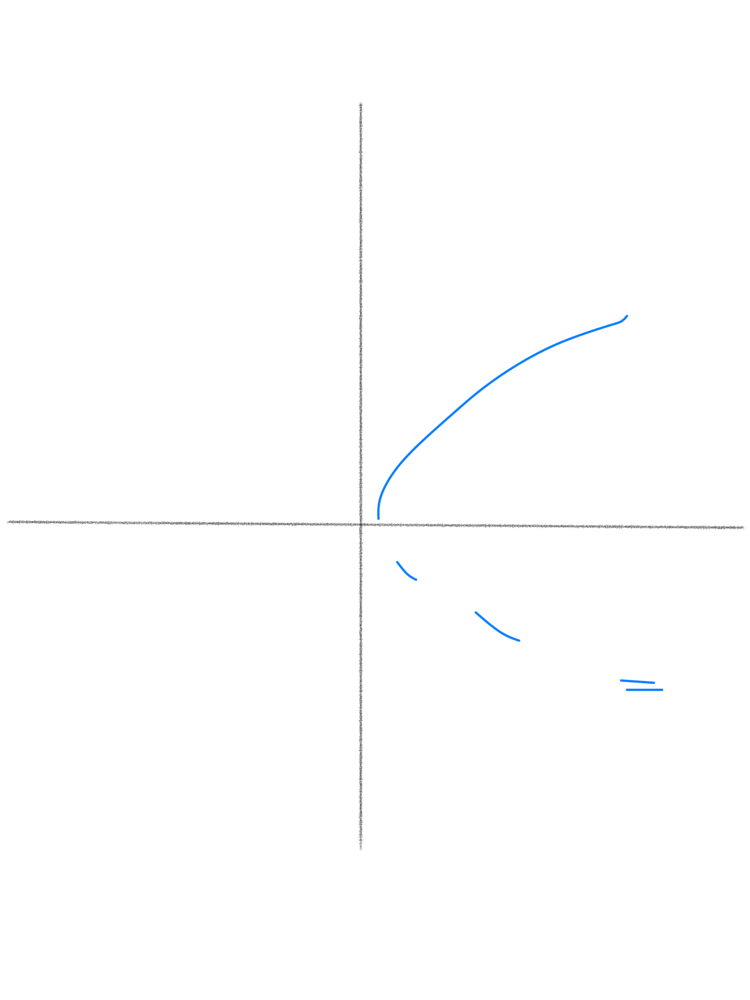
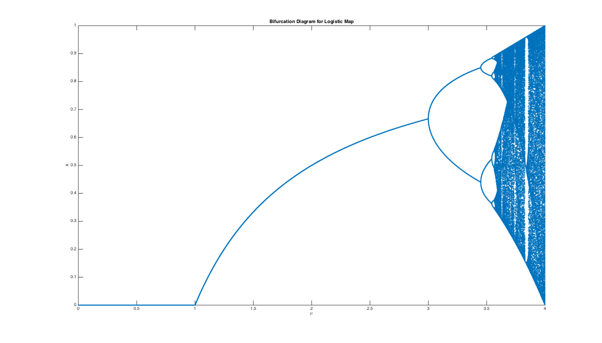

3.8. chaos¶
3.8.1. Normal forms of Hopf bifurcations¶
pitchfork: $\(\dot{x} = \lambda x - x^3\)$

subcritical pitchfork: \(\dot{x} = \lambda x + x^3\)

saddle node (turning point): \(\dot{x} = \lambda - x^2\) 
transcritical: \(\dot{x} = \lambda x - x^2\)

3.8.2. important figs¶
period-doubling (flip bifurcation) \(f = \mu x (1-x) (f = \mu sin (\pi x) \) is similiar) 
inverse tangent bifurcation - unstable and stable P-3 orbits coalesce, move slightly off bisector and becomes chaotic

pendulum

energy surface - trajectories run around the surface, not down it

Conservative systems: 6.5
study Hamiltonian p. 187-188
Pendulum: 6.7
dynamics - study of things that evolve with time
chaos - deterministic, aperiodic, sensitive, long-term prediction impossible
phase space - has coordinates \(x_1,...,x_n\)
phase portrait - variable x-axis, derivative y-axis
bifurcation diagram - parameter x-axis, steady state y-axis
draw separate graphs for these
first check - look for fixed points
for 1-D, if f’ \(<\) 0 then stable
stable f.p. = all possible ICs in a.s.b.f.n. result in trajectories that remain in a.s.b.f.n. for all time
asymptotically stable f.p. - stable and approaches f.p. as \(t\ra\infty\)
hyperbolic f.p. - eigenvals aren’t strictly imaginary
bifurcation point of f.p. - point where num solutions change or phase portraits change significantly
globally stable - stable from any ICs
autonomous = f is a function of x, not t
we can always make a system autonomous by having \(x_n\) = t, so \(\dot{x_n}\) = 1
dimension = number of 1st order ODEs, dimension of phase-space
existence and uniqueness thm: if \(\dot{x}\) and \(\dot{x}'\) are continuous, then there is some unique solution
linearization - used to find stability of f.p.s
- \[\begin{split} \dot{x} = f(x) &\\ \text{define }\delta x = (x-\bar{x}) \\ \dot{\delta x} = \frac{d}{dt}(x-\bar{x}) = \dot{x} = f(x) = f(\bar{x}+\delta x) \\ \dot{\delta x} =\cancelto{0}{f(\bar{x})} + \delta x f'(\bar{x}) + \cancelto{\text{0 by HGT iff f'!=0}}{O(x^2)} \\ \dot{\delta x} = \delta x f'(\bar{x}) \to \text{ now solve FOLDE} \\ \end{split}\]
solving Hopf: use polar to get \(\dot{\rho}, \dot{\theta}\)
multiply one thing by cos, one by sin, then add
\( \rho = \sqrt{x_1^2 + x_2^2} \\ \theta = tan^{-1}(\frac{x_2}{x_1})\)
Hysterisis curve - S-shaped curve of fixed branches - ruler getting larger - snap bifurcation - both axes are parameters
3.8.3. Systems of Linear ODEs¶
solutions are of the form \(\underbar{x}(t) = \underbar{C}_1e^{\alpha_1 t} + \underbar{C}_2e^{\alpha_2 t}\)
Eigenspaces: \(E^S\) (stable), \(E^U\) (unstable), \(E^C\) (center - real part) - plot eigenvectors
how to solve these systems?
solve eigenvectors
positive real part - goes out
negative real part - goes in
bifurcation requires 0 as eigenvalue
has imaginary component: spiral / focus
purely imaginary - center = stable, but not a.s.
finite velocity = \(\frac{dRe(\alpha)}{d\lambda}\)
change coordinates to polar
for \(\lambda \geq 0\), solution is a stable L.C. (from either direction spirals into a circular orbit)
attracting - any trajectory that starts within \(\delta\) of \(\bar{\underbar{x}}\) evolves to \(\bar{\underbar{x}}\) as t \(\to \infty\) (it doesn’t have to remain within \(\delta\) at all times
stable (Lyapanov stable) - any trajectory that starts within \(\delta\) remains within \(\varepsilon\) for all time (\(\varepsilon\) is chosen first)
asymptotically stable - attracting and stable
hyperbolic f.p. - iff all eigenvals of the linearization of the nds about the f.p. have nonzero real parts \
3.8.4. Discrete Nonlinear Dynamical Systems¶
functional iteration: \(x_{n+m} = f^m(x_n)\) (apply f m times)
fixed point: \(f(x^*)=x^*\)
f.p. stable if \(\|\frac{df}{dx}(x^*)\|<1\), unstable if \(>\) 1
check n-orbit by checking nth derivative: \(\frac{df^n}{dx}(x_i^*) = \prod_{i=1}^{n-1} \frac{df}{dx}(x_i^*)\)
period-doubling bifurcations
self-stability - orbit for which the stability-determining derivative is zero. This means that the max of the map and the point at which the max occurs are in the orbit.
type I intermittency - exhibited by inverse tangent bifurcation
Feigenbaum sequence - period-doubling path to chaos, keep increasing parameter until period is chaotic
\begin{center} \begin{tabular}{ | m{4cm} | m{4cm} | } \hline \multicolumn{2}{|c|}{3D Attractors} \ \hline Type of Attractor & Sign of Exponents \ \hline Fixed Point & (-, -, -)\ Limit Cycle & (0, -, -) \ Torus & (0, 0, -) \ Strange Attractor & (+, 0, -) \ \hline \end{tabular} \end{center}
homoclinic orbit - connects unstable manifold of saddle point to its own stable manifold
e.g. trajectory that starts and ends at the same fixed point
manifolds are denoted by a W (ex. \(W^S\) is the stable manifold)
heteroclinic orbit - connects unstable manifold of fp to stable manifold of another fp \
3.8.5. Conservative Systems¶
\(F(x) = -\frac{dV}{dx}\) (by defn.)
\(m\ddot{x}+\frac{dV}{dx}=0\), multiply by \(\dot{x} \to \frac{d}{dt}[\frac{1}{2}m\dot{x}^2+V(x)]=0\)
so total energy \(E=\frac{1}{2}m\dot{x}^2+V(x)\)
motion of pendulum: \(\frac{d^2\theta}{dt^2}+\frac{g}{L}sin\theta=0\)
nondimensionalize with \(\omega=\sqrt{g/L}, \tau=\omega t \to \ddot{\theta}+sin\theta =0\)
can multiply this by \(\dot{\theta}\)
\(\omega\)-limit \(t \to \infty\)
\(\alpha\)-limit \(t \to -\infty\)
libration - small orbit surrounding center
system: \(\dot{\theta}=\nu\), \(\dot{\nu} = -sin\theta\)
3.8.5.1. Hamiltonian Dynamical System¶
\(\dot{\underbar{x}}=\frac{\partial H}{\partial y}(\underbar{x},\underbar{y})\) , \(\dot{\underbar{y}}=-\frac{\partial H}{\partial x}(\underbar{x},\underbar{y})\) for some function H called the Hamiltonian
we can only have centers (minima in the potential) and saddle points (maxima)
separatrix - orbit that separates trapped and passing orbits
Poincare Benderson Thm - can’t have chaos in a 2D system
3.8.6. Ref¶
\(\frac{\partial}{\partial x}(f_1 * f_2 * f_3) = \frac{\partial f_1}{\partial x} f_2 f_3 + \frac{\partial f_2}{\partial x} f_1 f_3 + \frac{\partial f_3}{\partial x} f_1 f_2\)
\(e^{\mu it} = cos(\mu t)+ isin(\mu t)\)
\(x = A e^{(\lambda + i)t} + B e^{(\lambda - i)t} \implies x = (A' sin(t) + B' cos(t)) e^{\lambda t} \) If we have \(\dot{x_1},\dot{x_2}\) then we can get \(x_2(x_1) with \frac{dx_1}{dx_2} = \frac{\dot{x_1}}{\dot{x_2}}\)
3.8.7. Benard Convection¶
The Navier-Stokes Equations
Position
Differential element in configuration space
Time
3.8.8. Lorenz equations¶
Lorenz was studying hurricanes
ODEs for 3 coefficients in larger system (others are pretty small
use stream functions
Navier-Stokes PDEs - conservation of momentum - derive these equations as project?
no-flow steady-state \(T(y) = T_B + (T_T-T_B)y\)
Lorenz (ODE’s): x,y,z are coefficients in Fourier expansion, not dimensions $\(\dot{x}(t) = -\sigma x+ \sigma y\)\( \)\(\dot{y}(t) = (\rho_o)x - y - xz\)\( \)\(\dot{z}(t) = -bz + xy\)$
\(p_o\) - proportional to size of system
b - aspect ration - related to height:width
Navier-Stokes
independent variables
Position (vector)
Time (scalar)
dependent variables
Density (scalar)
fixed points
\(b>0, \rho_0 > 0, \sigma>0\) - let b,\(\sigma\) be fixed
fixed point \((\bar{x},\bar{y},\bar{z})\) is constant
equations
\(\dot{\bar{x}}(t) = 0 = -\sigma \bar{x}+ \sigma \bar{y}\)
\(\dot{\bar{y}}(t) = 0 = (\rho_o) \bar{x} - \bar{y} - \bar{x}\bar{z}\)
\(\dot{z}(t) = 0 = -b\bar{z} + \bar{x}\bar{y}\)
doing some algebra we get
\(FP_0, \forall \rho_o\)
\(\bar{x} = 0\)
\(\bar{y} = 0\)
\(\bar{z} = 0\)
\(FP_+, \rho_o \geq 1\)
\(\bar{x} = +\sqrt{b (\rho_o-1)} \)
\(\bar{y} = +\sqrt{b (\rho_o-1)}\)
\(\bar{z} = \rho_o-1\)
\(FP_-, \rho_o \geq 1\)
\(\bar{x} = -\sqrt{b (\rho_o-1)} \)
\(\bar{y} = -\sqrt{b (\rho_o-1)}\)
\(\bar{z} = \rho_o-1\)
these equations have symmetry
replace \((x(t),y(t),z(t))\) by \((-x(t),-y(t)),z(t)) \to\) we get back the original equations
\( M= \begin{bmatrix} 1 & 2 & 3 & 4 & 5 \newline 3 & 4 & 5 & 6 & 7 \end{bmatrix} \)
3.8.9. Linearization of Lorenz Equations about FPs \(\bar{\underline{x}}\)¶
\(\frac{d}{dt}\delta x(t) = \frac{\partial f}{\partial x}|_ \bar{\underline{x}}= -\sigma\)
\(\frac{d}{dt}\delta y(t) = \frac{\partial f_2}{\partial x}|_ \bar{\underline{x}}*\delta x(t) + \frac{\partial f_2}{\partial y}|_ \bar{\underline{x}}*\delta y(t) + \frac{\partial f_2}{\partial z}|_ \bar{\underline{x}}*\delta z(t) +...\) (higher order derivatives)
\( = (r-\bar{z})*\delta x(t) + -1*\delta y(t) + -\bar{x}*\delta z(t) + \delta x \delta z\)
do the same thing for \(\delta z(t)\)